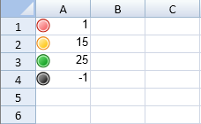

The icon set rule displays icons based on the values. You can specify the type of icon and whether to show the icon or the icon and the data in the cell. The following image displays icons and values.

You can specify many different types of icon sets with the iconSetType method and the IconSetType enumeration. You can reverse the icon order with the reverseIconOrder method. You can use the showIconOnly method to display the icon or the icon and data.
You can also set custom icons while using the icon set rule by using the icons() method of the IconSetRule class. The icons method allows users to customize the icons for each individual icon criterion in the IconCriterion class while also providing them with the icons information (an array composed of IIconInfo objects).
In order to set multiple custom icons concurrently, you can pass an array composed of IIconInfo objects to the icons() method. You can also modify the icons info item to determine which icon you want to display for a specific iconCriterion.
This example creates an icon set rule.
| JavaScript |
Copy Code
|
|---|---|
| activeSheet.setValue(0,0,1,3); activeSheet.setValue(1,0,15,3); activeSheet.setValue(2,0,25,3); activeSheet.setValue(3,0,-1,3); var iconSetRule = new GC.Spread.Sheets.ConditionalFormatting.IconSetRule(); iconSetRule.ranges([new GC.Spread.Sheets.Range(0,0,4,1)]); iconSetRule.iconSetType(GC.Spread.Sheets.ConditionalFormatting.IconSetType.FourTrafficLights); var iconCriteria = iconSetRule.iconCriteria(); iconCriteria[0] = new GC.Spread.Sheets.ConditionalFormatting.IconCriterion(true, GC.Spread.Sheets.ConditionalFormatting.IconValueType.Number, 1); iconCriteria[1] = new GC.Spread.Sheets.ConditionalFormatting.IconCriterion(true, GC.Spread.Sheets.ConditionalFormatting.IconValueType.Number, 10); iconCriteria[2] = new GC.Spread.Sheets.ConditionalFormatting.IconCriterion(true, GC.Spread.Sheets.ConditionalFormatting.IconValueType.Number, 20); iconSetRule.reverseIconOrder(false); iconSetRule.showIconOnly(false); activeSheet.conditionalFormats.addRule(iconSetRule); |
|
This example sets custom icons while using the icon set rule.
| JavaScript |
Copy Code
|
|---|---|
|
var sheet = spread.getActiveSheet(); sheet.setValue(0,0,1,3); var icons = iconSetRule.icons(); |
|
Note: While setting custom icons for an icon criterion, it is important to ensure that the IconSetType is selected within the scope of enumeration. Also, make sure that you set a valid iconIndex for the IconSetType that you have chosen.
For instance: let's say you select "threeTrafficLights" as the IconSetType. Since threeTrafficLights will have only three icons, your iconIndex should lie between 0~2.
If the IconSetType or iconIndex is out of scope, sheet will not render any icon for the icon criterion set by the user and the space for the icon will be displayed as an empty space in the cell.